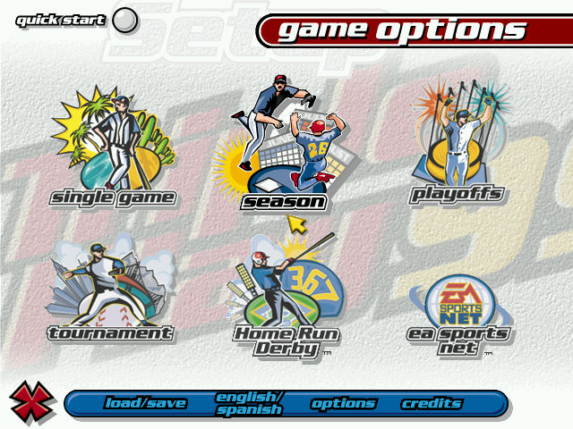
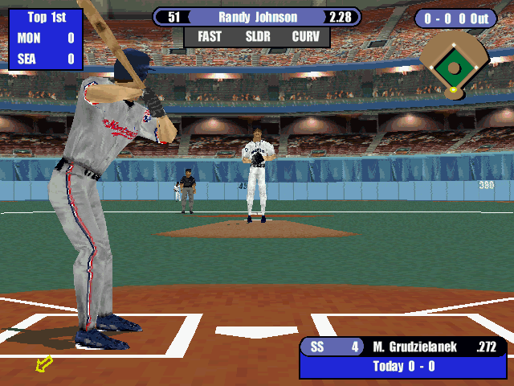

名稱：美國職棒大聯盟99 (Triple Play 99，英文版) 簡介：EA 1998年出品的棒球遊戲 [待補]。   保護：光碟 備註：系統剩餘記憶體不可太多，否則遊戲可能會誤判，出現至少需要16MB記憶體的訊息。 可進行下列修正略過檢驗： tp99_r.exe 3D 00 00 00 01 0F 8C 81 01 00 00 -- -- -- -- -- 90 90 90 90 90 90 檔案：TP99PAT.rar = 3D加速更新檔

